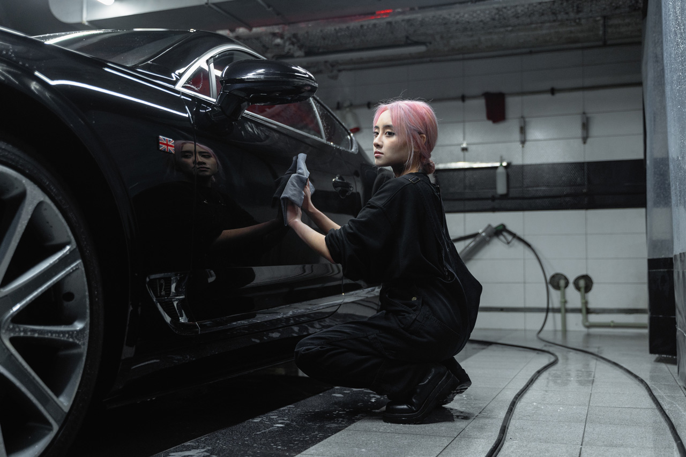
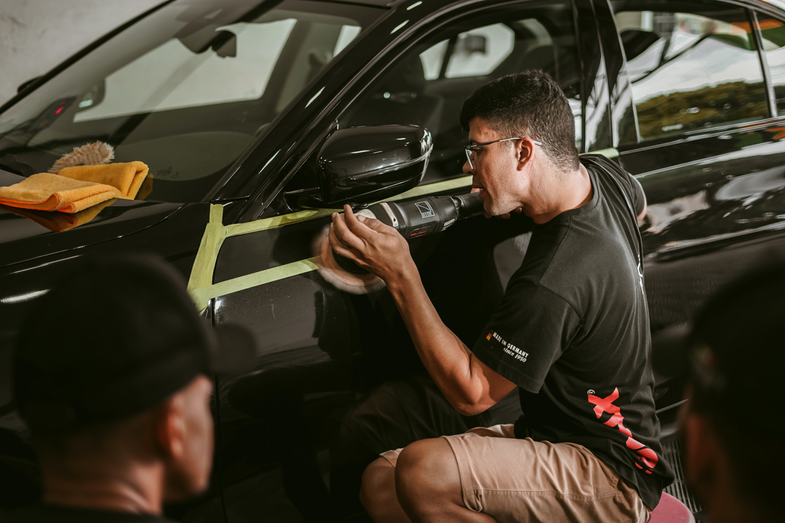
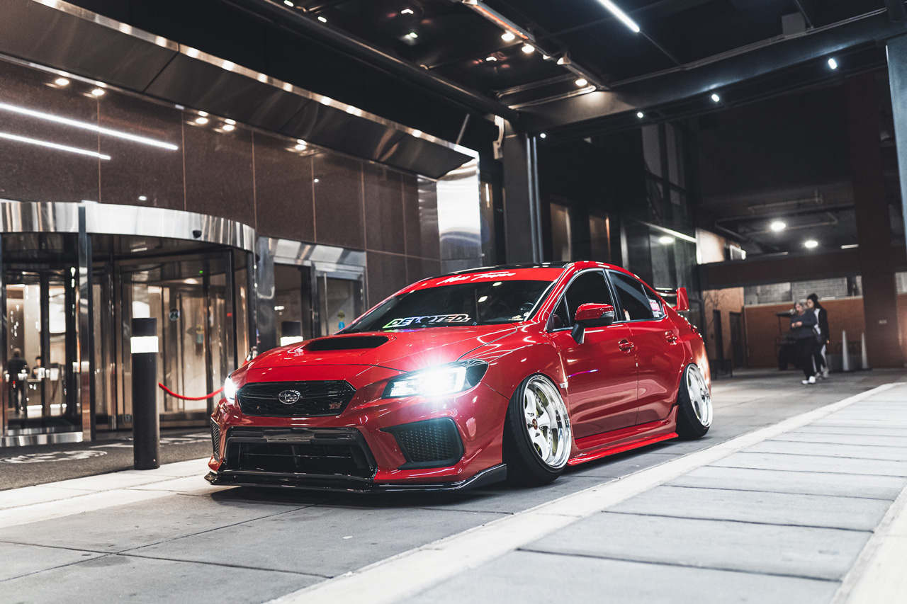

🛋️🚗 Na nossa estética automotiva, oferecemos um serviço especializado
de limpeza de bancos
de couro para manter o interior do seu veículo com uma aparência luxuosa e bem cuidada.
Nossos serviços são projetados para revitalizar e proteger os bancos de couro, garantindo
que eles permaneçam macios, flexíveis e livres de sujeira e manchas.
🧼 Utilizamos produtos de limpeza específicos e seguros para couro,
que removem efetivamente
a sujeira e a oleosidade sem danificar a superfície ou ressecar o couro. Cada banco é
cuidadosamente tratado, garantindo uma limpeza profunda e completa.
✨ Além da limpeza, também oferecemos serviços de condicionamento e
hidratação, que ajudam a
manter o couro macio, flexível e protegido contra rachaduras e desbotamento. Isso não
apenas
melhora a estética dos bancos, mas também prolonga a vida útil do couro, mantendo-o em
condições ideais por mais tempo.
🌟 Com nossa limpeza de bancos de couro, você pode desfrutar de um
interior de carro
impecável e elegante, que reflete o seu bom gosto e cuidado com o veículo. Cada detalhe
é
tratado com a máxima atenção, garantindo resultados excepcionais que superam as suas
expectativas.
👌 Confie em nós para fornecer um serviço de limpeza de bancos de
couro de alta qualidade,
que deixará o interior do seu carro com uma aparência renovada e luxuosa. Agende hoje
mesmo
o seu serviço e descubra o que é ter bancos de couro impecavelmente limpos e bem
cuidados!
Agendar Serviço
POLIMENTO

✨🚗 Na nossa estética automotiva, oferecemos um serviço especializado de
polimento para
proporcionar ao seu veículo um brilho excepcional e uma aparência impecável. Nosso serviço
de polimento vai além de simplesmente remover arranhões e imperfeições da pintura, ele
restaura o brilho original do seu carro e protege a sua superfície contra danos futuros.
🔍 Começamos com uma avaliação minuciosa da pintura para identificar
arranhões, redemoinhos
e outros defeitos superficiais. Em seguida, utilizamos técnicas avançadas e produtos de alta
qualidade para polir a superfície, removendo imperfeições e restaurando o seu brilho
natural.
🌟 O resultado é uma pintura profundamente brilhante, suave ao toque e
protegida contra os
elementos. Além de melhorar a estética do seu veículo, o polimento também ajuda a preservar
o valor do seu investimento, mantendo a pintura em ótimas condições ao longo do tempo.
👌 Confie em nós para fornecer um serviço de polimento de alta qualidade
que deixará o seu
carro com uma aparência deslumbrante e um brilho duradouro. Agende hoje mesmo o seu serviço
e descubra o que é ter um veículo que se destaca onde quer que você vá!
Agendar Serviço
REVITALIZAÇÃO

🔧✨ Na nossa estética automotiva, oferecemos um serviço especializado de
revitalização para
trazer vida nova ao seu veículo. Nosso objetivo é revitalizar e rejuvenescer cada aspecto do
seu carro, desde a carroceria até o interior, proporcionando uma aparência renovada e
impressionante.
🚗 Começamos com uma análise abrangente do estado do seu veículo,
identificando áreas que
necessitam de atenção especial. Em seguida, aplicamos técnicas avançadas e produtos de alta
qualidade para revitalizar a pintura, restaurar o brilho das superfícies e rejuvenescer os
detalhes interiores.
💫 Nossa equipe dedicada trabalha com cuidado e atenção aos detalhes para
garantir
resultados excepcionais que superam as suas expectativas. Cada aspecto do seu carro é
tratado com o máximo cuidado e profissionalismo, deixando-o com uma aparência renovada e
como se tivesse acabado de sair da fábrica.
🌟 Com nossa revitalização, você pode desfrutar de um veículo que não
apenas parece novo,
mas também se sente novo. Cada detalhe é cuidadosamente revitalizado para proporcionar uma
experiência de condução rejuvenescida e agradável.
👌 Confie em nós para fornecer um serviço de revitalização de alta
qualidade que deixará o
seu veículo com uma aparência renovada e impressionante. Agende hoje mesmo o seu serviço e
descubra o que é ter um carro que parece novo novamente!
Agendar Serviço
TRATAMENTO DE PINTURA

🎨✨ Na nossa estética automotiva, oferecemos um serviço especializado de
tratamento de
pintura para elevar a aparência do seu veículo a um novo patamar de brilho e proteção. Nosso
tratamento de pintura é projetado para realçar a cor e o brilho da sua pintura, enquanto
oferece uma camada de proteção duradoura contra os elementos.
🛡️ Começamos com uma preparação meticulosa da superfície, removendo
impurezas e defeitos
para garantir uma adesão perfeita do tratamento. Em seguida, aplicamos uma combinação de
produtos de alta qualidade, como selantes de cerâmica ou ceras de alta performance, que
proporcionam um acabamento excepcional e duradouro.
💫 O resultado é uma pintura profundamente brilhante, suave ao toque e
protegida contra os
danos causados pelo sol, chuva, poeira e contaminantes ambientais. Além de melhorar a
estética do seu veículo, o tratamento de pintura também ajuda a preservar o valor do seu
investimento, mantendo a pintura em ótimas condições ao longo do tempo.
👍 Nossa equipe altamente treinada e experiente trabalha com cuidado e
atenção aos detalhes
para garantir que cada centímetro da pintura receba o tratamento necessário para alcançar
resultados excepcionais. Você pode confiar em nós para fornecer um serviço de tratamento de
pintura de alta qualidade que deixará o seu veículo com uma aparência deslumbrante e
protegida.
🚗💎 Agende hoje mesmo o seu tratamento de pintura e descubra o que é ter
um carro com uma
pintura que parece recém-saída da concessionária, mantendo sua beleza por muito tempo!
Agendar Serviço